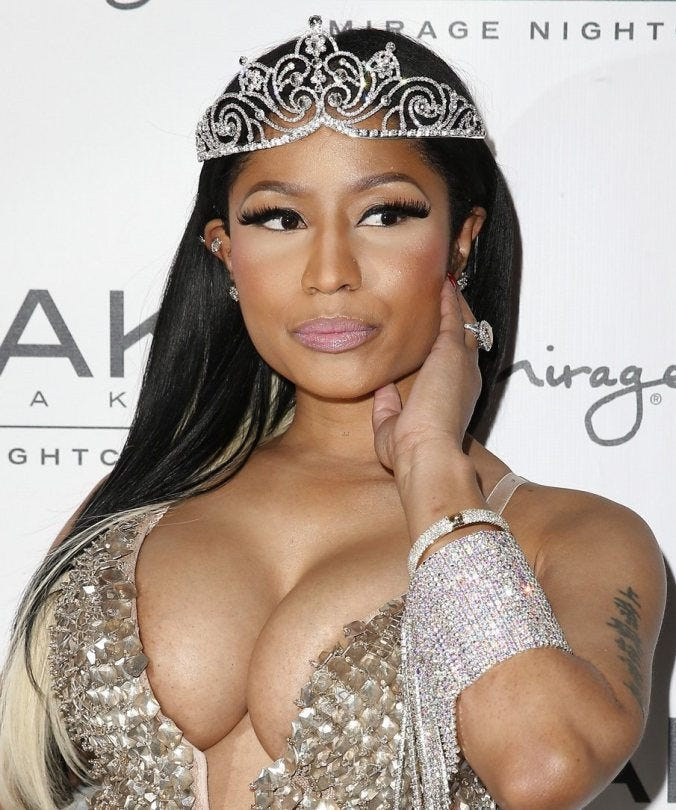

The Queen of Rap.
October 2, 2023 by Joel
Nicki Minaj, often hailed as the 'Queen of Rap', reigns supreme in the hip-hop realm for a multitude of reasons. Her unparalleled lyricism, versatile flow, and commanding stage presence have established her as an iconic figure in the music industry. With an impressive discography and numerous chart-topping hits, Nicki has not only shattered records but also paved the way for a new generation of female artists in a historically male-dominated genre.
Minaj has won numerous awards throughout her career, including six American Music Awards, eleven BET Awards, and four Billboard Music Awards. She has collaborated with Drake, Lil Wayne, Eminem, and other major artists while achieving solo chart dominance. Minaj exemplifies flair and theatricality with her eye-catching fashion sense and colorful wig collections. She is considered one of the most influential female rappers ever and a driving force in revitalizing female rap in the 2010s